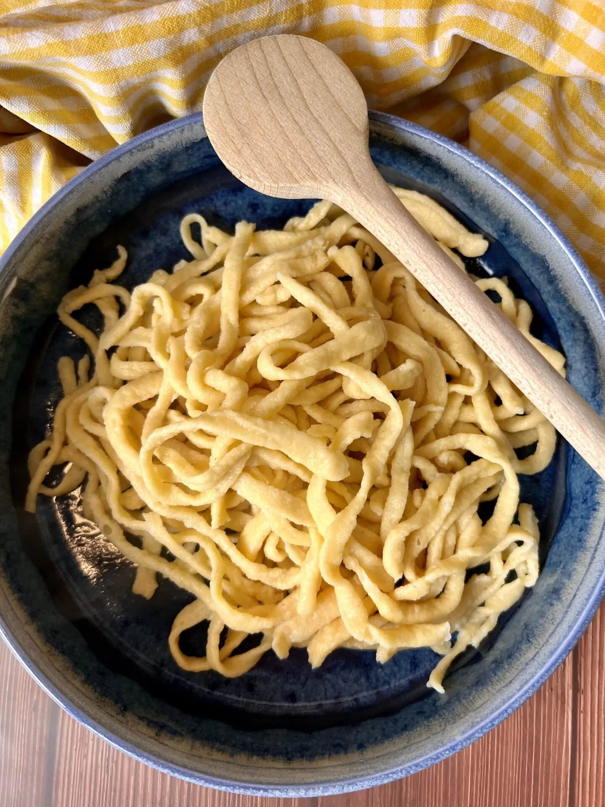

Spaetzle

Description
Spaetzle is a traditional swabian dish.
It is served as a side dish to e.g. Schnitzel.
Ingredients
Steps
- Mix all ingredients together until you got a Klaepperlesteig
- Boil water in a big pot
- Spaetzle schaben
- Once the Spaetzle float on the water surface, remove them and set aside in a serving dish
Home